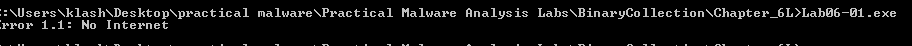
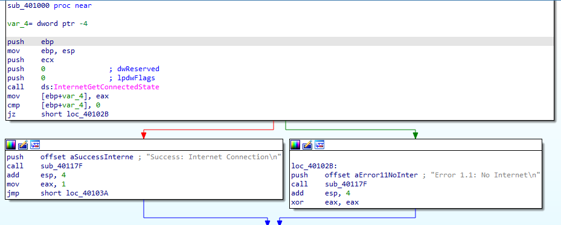
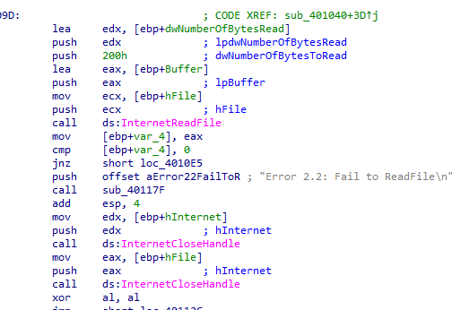

Practical Malware Analysis - Lab 6
The goal of the labs for this chapter is to help you to understand the overall functionality of a program by analyzing code constructs. Each lab will guide you through discovering and analyzing a new code construct. Each lab builds on the previous one, thus creating a single, complicated piece of malware with four constructs. Once you’ve finished working through the labs, you should be able to more easily recognize these individual constructs when you encounter them in malware.
Lab 6-1
In this lab, you will analyze the malware found in the file Lab06-01.exe.
Q1: What is the major code construct found in the only subroutine called by main?
In the main function we see a JNZ after compare instruction so it’s most likely if construct
There a function called before, it checks Internet connection and prints the state with if condition (cmp + JZ) based on output
Then string is pushed as a parameter to a subroutine for the next question
Q2: What is the subroutine located at 0x40105F?
Going into the subroutine it is most likely doing string operations into I/O stream
Q3: What is the purpose of this program?
Checking the Internet connection and printing to the output if there is a connected success or fail
running the file
Lab 6-2
Analyze the malware found in the file Lab06-02.exe.
Q1: What operation does the first subroutine called by main perform?
It returns 1 if there is Internet connection and prints success
Q2: What is the subroutine located at 0x40117F?
A string argument is passed before calling that routine (same string format passed to printf)
Same as Q2 in Lab 6-1
Q3: What does the second subroutine called by main do?
Here it tries to openurl practicalmalwareanalysis.com with internet explorer v7.5 agent and depending if success jumps to location to continue or prints fail and returns
If success it calls internetreadfile to try to read 200 bytes of the url and if fails, it prints failed to readfile and returns
If success it compares first bye with 0x3C (“<” in ASCII) and other conditions (when combined <!–)
If it fails any condition it prints failed to receive command and returns
Q4: What type of code construct is used in this subroutine?
It is a bunch of if conditions then switch case
Q5: Are there any network-based indicators for this program?
Yes User agent and Url

Q6: What is the purpose of this malware?
As a summary it will check internet connection then openurl to the url pma/cc.htm and check if it starts with <!– then outputs success parsed command
then sleeps for 6 seconds
Lab 6-3
In this lab, we’ll analyze the malware found in the file Lab06-03.exe.
Q1: Compare the calls in main to Lab 6-2 ’s main method. What is the new function called from main?
subroutine 401130
Q2: What parameters does this new function take?
Two parameters pushed lpExistingfile and char
First parameter is argv (the start of argv array address) and second parameter al is lower byte of EAX which is return of 401040 Lab 6-2 Q3 the parsed command after <!–
Q3: What major code construct does this function contain?
switch case
Q4: What can this function do?
A switch case based on input which is parsed after <!– (a, b, c ,d ..) it does different function like
In case of ‘a’ it creates directory c:\\Temp
In case of ‘b’ it copies a file (in argv) into c:\\Temp\\cc.exe
In case of ‘c’ it deletes the file c:\\Temp\\cc.exe
In case of ‘d’ it set c:\\Temp\\cc.exe in registry key Software\Microsoft\Windows\CurrentVersion\Run for persistance to starte the exe at startup
In case of ‘e’ it sleeps 100 seconds
In the default case it print Error
Q5: Are there any host-based indicators for this malware?
The registry Software\Microsoft\Windows\CurrentVersion\Run
The file c:\\Temp\\cc.exe
The url and User-Agent from lab 6-2
Q6: What is the purpose of this malware?
As a summary it will check internet connection then openurl to the url pma/cc.htm and copy first 200 bytes then check if it starts with <!– then takes first char after and in switch case it does multiple functions
Lab 6-4
In this lab, we’ll analyze the malware found in the file Lab06-04.exe.
the new thing here the call to retrieve command from the pma site after <!– is put in a loop (1440 times)
The current counter var_C is passed into the function html parser to be printed out with printf
Summary: it will loop throughtout the day with 100 seconds intervals for commands to execute from practicalmalwareanalysis.com/cc.htm
Q1: What is the difference between the calls made from the main method in Labs 6-3 and 6-4?
Q2: What new code construct has been added to main?
Q3: What is the difference between this lab ’s parse HTML function and those of the previous labs?
Q4: How long will this program run? (Assume that it is connected to the Internet.)
Q5: Are there any new network-based indicators for this malware?
Q6: What is the purpose of this malware?